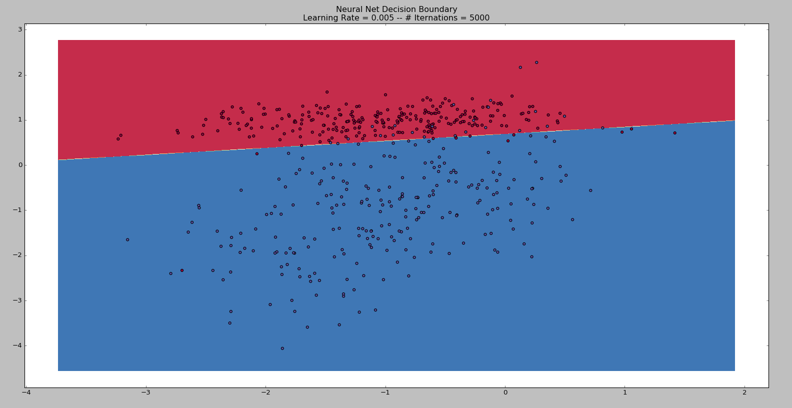

Problem Definition
The objective of this assignment is to understand how neural network works by implementing a simple 2-layer and 3-layer neural network (NN). A 2-layer neural network with no-hidden layer is implemented to gain understanding of how the neural network fits on a linear data. A 3-layer neural network with 1 hidden layer is implemented to understand how the neural network performs on non-linear data. We also investigated how each of the parameters has effect on the overall performance of the neural network, such as change in learning rate and number of hidden nodes.
Method and Implementation
2-layer Neural Network
We implemented the two layer neural network using forward propagation to predict the output values. A seperate bias node was fed into the output layer. This node received a constant input of 1. The following backpropagation algorithm provided in class was used train the weights.
3-layer Neural Network
The three layer neural network was implemented similarly to the two layer network. We added a hidden layer of nodes between the input and output layers. The input and output layers each had two fixed nodes, while the number of nodes in the hidden layer varied. Bias nodes fed from the input to the hidden layer and from the hidden layer to the output layer. These bias nodes each had a constant input of 1 and did not influence the backpropagation of nodes in the layers before them.

L2 Regularization
We wrote a simple implementation of L2 regularization based on the weight update equation shown below, where Co is the original performance function, w is the weight, ng is the learning rate, and lambda is a regularization parameter passed into the neural network.
The algorithm depends on a regularization paramater, lambda, which is passed into our neural network. We calculate a weight decay D based on the learning rate, lambda, and the number of training samples in the training data set. In our backpropagation procedure, each weight is then scaled by D before gradient descent is performed.
Experiments
For our experiments, we trained the 2-layer neural network model using the data-set ToyLinearX.csv and ToyLinearY.csv. For the 3-layer neural network model, we used the data-set ToyMoonX.csv, ToyMoonY.csv to visualize the decision boundary learned by the neural network model.
To understand the effect of learning rate on how neural network is trained, we fixed the epoch to 25000 and the number of hidden node to 3, then varied the learning rate (epsilon) from 0.1, 0.01 to 0.001.
To understand the effect of number of hidden nodes in neural network, we fixed the learning rate to 0.05 and epoch to 5000, then varied the number of hidden node from 3, 5, 10, 50.
Our experiment also illustrate the case of overfitting and the result of decision boundary after implementing L2 regularization.
Results
Decision Boundary Result using 2-layer Neural Network
Parameters: epsilon = 1, num_epochs = 5000, cost = 0.659997642452

Change in Learning Rate with 2-layer Neural Network Model
Parameters: epsilon = 0.00001, num_epochs = 5000, cost = 0.332508710691
Parameters: epsilon = 0.001, num_epochs = 5000, cost = 0.218827290546
Parameters: epsilon = 0.005, num_epochs = 5000, cost = 0.236282121054

Parameters: epsilon = 0.01, num_epochs = 5000, cost = 0.239947692706
Parameters: epsilon = 0.05, num_epochs = 5000, cost = 0.240688871517
Parameters: epsilon = 0.1, num_epochs = 5000, cost = 0.240688872252
Parameters: epsilon = 0.5, num_epochs = 5000, cost = 0.350587624091
Parameters: epsilon = 1, num_epochs = 5000, cost = 0.659997642452
Change in Learning Rate with 3-layer Neural Network Model
To understand the effect of learning rate on how neural network is trained, we fixed the epoch to 25000 and the number of hidden node to 3, then varied the learning rate (epsilon) from 0.1, 0.01 to 0.001.
Parameters: epsilon = 0.1, num_epochs = 25000, hidden node = 3, cost = TBD
Parameters: epsilon = 0.01, num_epochs = 25000, hidden node = 3, cost = TBD TBD
Parameters: epsilon = 0.001, num_epochs = 25000, hidden node = 3, cost = 0.324249154503
Change in Number of Hidden Layer with 3-layer Neural Network Model
To understand the effect of number of hidden nodes in neural network, we fixed the learning rate to 0.05 and epoch to 5000, then varied the number of hidden node from 3, 5, 10, 50.
Parameters: epsilon = 0.05, num_epochs = 5000, hidden node = 3, cost = 0.097086165446

Parameters: epsilon = 0.05, num_epochs = 5000, hidden node = 5, cost = 0.13716572796
Parameters: epsilon = 0.05, num_epochs = 5000, hidden node = 10, cost = 0.0841060319462
Parameters: epsilon = 0.05, num_epochs = 5000, hidden node = 50, cost = 0.128328969713

L2 Regularization Results
L2 Regularization with # of Hidden Nodes = 5
Normal (without L2 Regularization)Parameters: epsilon = 0.05, num_epochs = 5000, hidden node = 5
L2 Regularization with Lambda = 1
Parameters: epsilon = 0.05, num_epochs = 5000, hidden node = 5
L2 Regularization with Lambda = 5
Parameters: epsilon = 0.05, num_epochs = 5000, hidden node = 5
L2 Regularization with # of Hidden Nodes = 15
Normal (without L2 Regularization)Parameters: epsilon = 0.05, num_epochs = 5000, hidden node = 15
L2 Regularization with Lambda = 1
Parameters: epsilon = 0.05, num_epochs = 5000, hidden node = 15
L2 Regularization with Lambda = 5
Parameters: epsilon = 0.05, num_epochs = 5000, hidden node = 15
Discussion
2-layer Neural Network
Q.1. Using the skeleton code provided in Lab 4, implement a 2-layer neural network (without any hidden layers). You will have to implement 3 functions: compute_cost(), predict() and fit(). Train this model using the dataset ToyLinearX.csv, ToyLinearY.csv and visualize the decision boundary learned by your model.
The following is an example visualization of the Decision Boundary result using a 2-layer neural network model:
Parameters: epsilon = 1, num_epochs = 5000, cost = 0.659997642452
Q.2. Now, train your neural network model using the dataset ToyMoonX.csv, ToyMoonY.csv and visualize the decision boundary learned by your model. Can your 2-layer neural network model learn non-linear decision boundaries? Why or why not?
Our 2-layer neural network model can NOT learn non-linear decision boundaries.
The input nodes (or vector) are non-processing elements. That is they are fixed and therefore act as linear activation function as in a binary classifier. It can just function in a way to classify whether a given input belongs to one class or another.
To be able to model a non-linear boundary, we will need relatively complex or non-linear activation functions. Multilayer perceptron neural network can modify standard linear model to distinguish data which is not linearly separable as in our case with the Moon dataset. We use backward propagation technique to achieve this.
3-layer Neural Network
Q.3 Implement a neural network class with 1 hidden layer. Train this model using the dataset ToyLinearX.csv, ToyLinearY.csv and visualize the decision boundary learned by your model. Then, train your neural network model using the dataset ToyMoonX.csv, ToyMoonY.csv and visualize the decision boundary learned by your model. Can your 3-layer neural network model (with one hidden layer) learn non-linear decision boundaries? Why or why not?
Yes, a 3-layer neural network model (with one hidden layer) can learn non-linear decision boundaries. This because we can model higher order of complexity using the hidden layer. As we increase the number of hidden nodes, the order of the complexity increases hence we can model non-linear decision boundaries.
Effects of Learning Rate on Neural Network
Q.4. What effect does learning rate have on how your neural network is trained? Illustrate your answer by training your model using different learning rates.
Learning rate if small is desirable when we look at it from a naive perspective. Our NN would learn in small or minute increments thereby arriving at the desired, close to perfect solution. This scenario or reasoning holds well when the function is a simple as in the figure below on the left side.
More often than not, we will encounter real world problems is something like the figure below on the right side where there are local minima, in additional to a global one. The leaning rate has to be high enough to climb out of the trough of the local minima to progress to the global minima.
High learning rate could potentially make the result unstable wavering in and out of good and bad solutions. A good learning rate is a range of values that produce optimal results. Low learning rate would require higher number of iterations to produce an acceptable solution. Low learning rate has a tendency to smooth the curves especially in the case of non-linear model.
Effects of number of Hidden Layer on Neural Network
Q.5.What effect does the number of nodes in the hidden layer have on how your neural network is trained? Illustrate your answer by training your model using differnet numbers of hidden layer nodes.
As the number of nodes in the hidden layer increases, the resulting decision boundary from the output of the neural network follows more closely with the actual boundary of the dataset. However, for a high number of hidden layer, the resulting decision boundary does not generalize well. Therefore, when a new node/data is added, the neural network may not perform as well as expected. This is known as overfitting of neural network.
Overfitting
Q.6. What is overfitting and why does it occur in practice? Name and briefly explain 3 ways to reduce overfitting.
What is overfitting?
Overfitting means that the neural network is too fixable and can’t get ideal results to describe the underlying relationship. It happens especially while predicting inputs that are not in the training sample. Even when the error on the training set is a very small value, when new data is presented to the NN the error is large. In the textbook, there is a good analogy: if you want to fix a soft rope into a shape (function) by driving in nails, it will be hard, and the rope will vary wildly between nails.
Why does it occur?
Overfitting occurs because the model is relatively too complex and the criterion used for training is not right. This could happen when there are too many input parameters relative to the number of observations, or when there are too many weights in the NN relative to the number of training samples.
Three Ways to Reduce Overfitting
Early Stopping:
This technique divides data into three subsets — a training set, a validation set, and a test set. The training set is for actual training of the network. The validating set is then used to supervise the validation error and test the predictability of the network. When overfitting occurs, the error in the validation set usually rises. The training is terminated after a certain number of these iterations where error rises. The test set is then used comparing different models, so it won’t be used in training.
Multiple Neural Networks:
Another technique is to train multiple networks and average their outputs. The mean squared error for the average output is likely to be lower than the individual performance errors. This works especially when the overfitting is caused by noisy data or a small dataset.
Regularization:
Regularization imposes a smoothness constraint on the performance function. The new performance function forces the network to have smaller biases and weights, and this forces the network to be smoother and less likely to overfit.
L2 Regularization
Q.7. One common technique used to reduce overfitting is L2 regularization. How does L2 regularization prevent overfitting? Implement L2 regularization. How differently does your model perform before and after implementing L2 regularization?
One common symptom associated with overfitting in a neural network is large, even extreme, weight values. Large weights make the system more susceptible to small, local changes in input data that may reflect random variation instead of a generalizable data pattern. In order to prevent single weights from drastically affecting a network, we use the L2 regularization technique, which helps reduce overfitting by assigning a cost to the size of our network's weights. This cost helps prevent weights from growing to unwieldy sizes.
The pictures in the results show the decision boundary of our neural network after being trained on the ToyMoon data set with and without L2 regularization.
(pictures in word document)
Based on these results, we say that as the number of hidden nodes increases, the effects of L2 regularization are more pronounced. In the case with 15 hidden nodes, the decision boundary is much smoother for the network with lambda=5 than for the lambda=1 network and the unregulated network. When we examine the graphs of 5 node networks, we see that the decision boundary for lambda=1 actually seems to be more overfitted than the unregulated network, while the lambda=5 boundary remains smooth.
Conclusions
Based on our results the two layer neural network performs well for linear dataset, however, does not work well for the non-linear dataset. The 3-layer neural network with hidden layer was able to find a decision boundary that is close to the actual boundary as we increased the number of hidden layer. We also investigated how the learning rate effects the performance of the neural network. As the learning rate decreased, the resulting outcome of neural network required longer to resolve.
Credits and Bibliography
Wikipedia: https://en.wikipedia.org/wiki/Overfitting#Regression
Mathworks: http://www.mathworks.com/help/nnet/ug/improve-neural-network-generalization-and-avoid-overfitting.html
http://neuralnetworksanddeeplearning.com/chap3.html#overfitting_and_regularization
https://en.wikipedia.org/wiki/Perceptron
https://en.wikipedia.org/wiki/Multilayer_perceptron
https://www.willamette.edu/~gorr/classes/cs449/momrate.html
http://neuralnetworksanddeeplearning.com/chap3.html
patrick winston: ai book